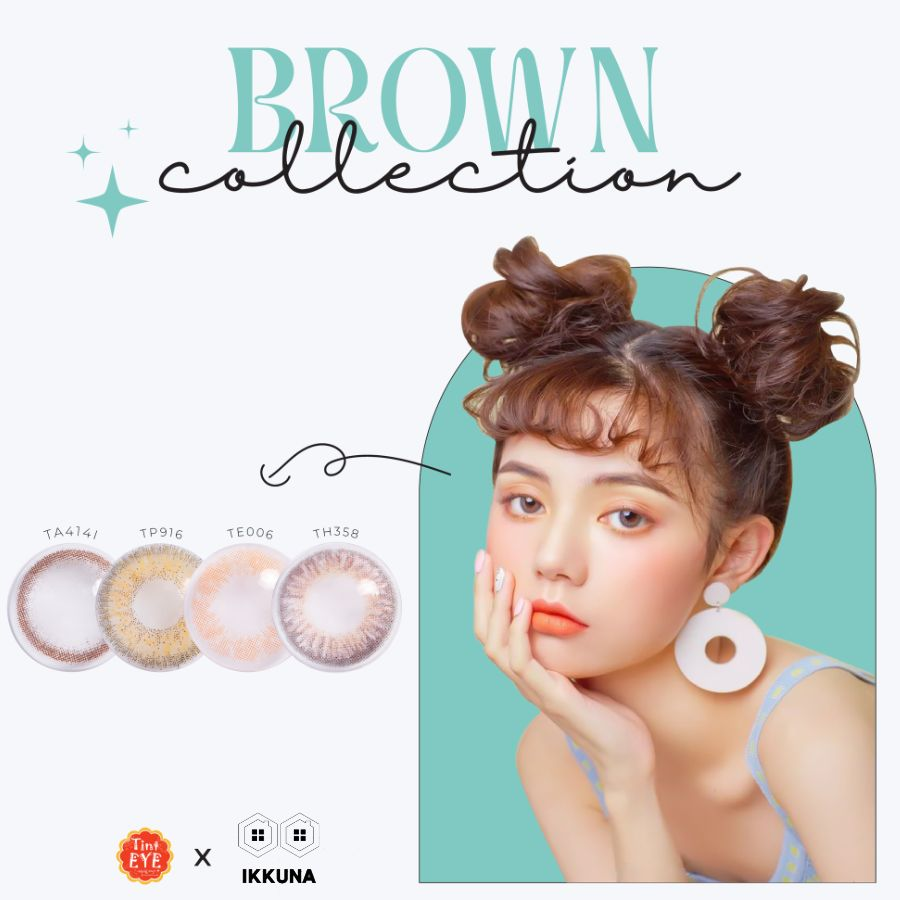
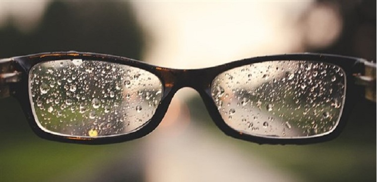
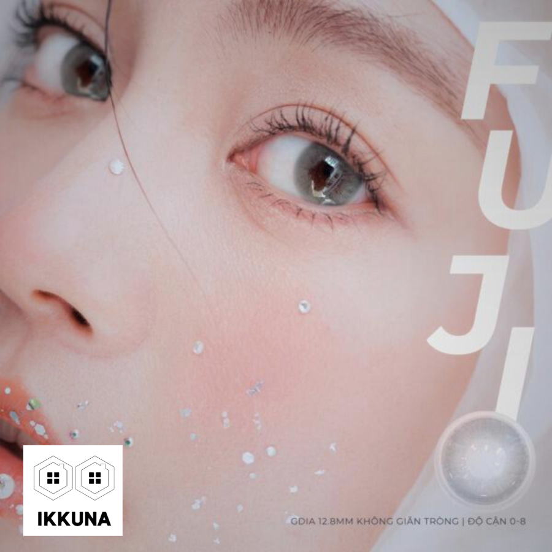

Kính áp tròng, hay còn được các bạn trẻ gọi bằng 1 cái tên phổ biến hơn là lens. Với sự lăng- xê của các KOL nổi tiếng, cùng những tấm hình thời trang “long lanh lung linh lấp lánh kiêu sa”, kính áp tròng trở nên hot rần rần trong giới trẻ.
Song song với sự nổi tiếng của lens, vẫn còn không ít những băn khoăn, rằng: đeo kính không độ có ảnh hưởng không, có đeo thay kính cận được không, đeo lens làm sao để không ảnh hưởng đến mắt? Trong bài viết dưới đây, Kính mắt Ikkuna sẽ giải đáp cho bạn câu hỏi có nên đeo kính áp tròng thay kính cận không?
Kính áp tròng là kính gì?
Kính áp tròng đối với một số người đã không còn quá xa lạ. Cho những ai chưa biết, thì đây là một loại thấu kính mỏng được làm từ chất dẻo. Khi sử dụng, nó sẽ được đặt trực tiếp, áp sát lên bề mặt con ngươi, giúp điều chỉnh các tật khúc xạ của mắt như cận thị.
Kính áp tròng ngoài việc được coi là thiết bị y tế được dùng để điều chỉnh các tật của mắt, mà nó còn đáp ứng nhu cầu thẩm mỹ hay chữa một số bệnh liên quan đến nhãn khoa.
Hiện nay trong giới trẻ, kính áp tròng trở nên rất phổ biến, nhiều người coi nó giống như một trào lưu thời trang. Ngoài các tròng kính cận ra, các tròng kính không độ với đủ mọi màu sắc, mà chúng ta hay gọi với một cái tên ngắn gọn là lens, được nhiều bạn trẻ ưa chuộng để thay đổi màu mắt, tạo điểm nhấn ấn tượng, đầy cá tính trên gương mặt.
Lợi ích của việc đeo kính áp tròng
Cải thiện các tình trạng tật khúc xạ ở mắt
Nhiều người thắc mắc bị cận có nên đeo kính áp tròng không? Câu trả lời là hoàn toàn có thể. Bởi cũng giống như kính cận, kính áp tròng cũng có tác dụng cải thiện các tình trạng tật khúc xạ ở mắt, giúp bạn quan sát rõ hơn.
Gọn nhẹ, không bị nhòe, giảm tầm nhìn khi trời mưa
Một trong những lý do khiến nhiều người thích sử dụng kính áp tròng cận hơn là các loại kính cận truyền thống, đó là bởi chúng rất gọn nhẹ. Hai chiếc thấu kính bỏ gọn trong một chiếc hộp nhỏ, gọn nhẹ vừa túi giúp bạn có thể đem đi bất cứ đâu. Còn với kính cận truyền thống, bỏ trong hộp hoặc bao đôi khi cũng gây một chút lỉnh kỉnh cho người sử dụng.
Tạo vẻ đẹp thẩm mỹ
Hiện nay trên thị trường có rất nhiều loại kính áp tròng với nhiều màu sắc khác nhau, hay còn được gọi với cái tên phổ biến hơn là lens. Với sự đa dạng về màu sắc, cách sử dụng dễ dàng, lens được rất nhiều các bạn trẻ, đặc biệt là thế hệ GenZ ưa chuộng.
Những chiếc kính áp tròng màu sẽ giúp bạn tạo điểm nhấn trên gương mặt, tự tin thể hiện cá tính riêng của bản thân. Với những bạn gặp vấn đề cận thị nhưng lại không muốn đeo chiếc kính dày cộp, thì đây chính là “chân ái” đối với các bạn. Với những tín đồ thời trang, có thể nói kính áp tròng màu chính là phụ kiện không thể thiếu trong tủ đồ của bạn.
Có nên đeo kính áp tròng thay kính cận không?
Với những lợi ích kể trên, có thể thấy, bạn hoàn toàn có thể đeo kính áp tròng thay cho kính cận. Những tròng kính tuy nhỏ nhưng lại rất “có võ”. Ngoài việc giúp bạn cải thiện các tật khúc xạ ở mắt như cận thị, chúng vừa nhỏ gọn, dễ sử dụng, lại nhiều màu sắc đa dạng giúp bạn tự tin khoe cá tính. Bạn có thể sử dụng những chiếc kính áp tròng cận để đi chơi thể thao, chạy nhảy hay làm một số hoạt động cường độ cao khác, mà không sợ ảnh hưởng đến thị giác, hay vướng víu như các loại kính cận truyền thống trong quá trình sử dụng.